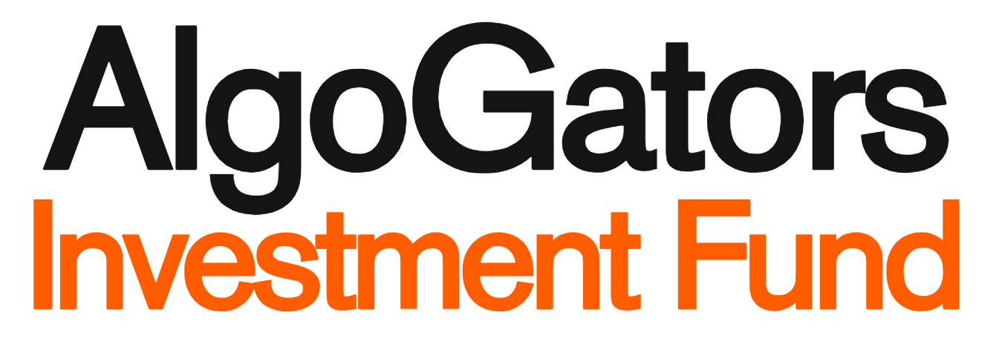

A structured path through quantitative research methodology
Every analyst builds toward the same structure: a complete Investment Proposal (IP) that documents hypothesis, data, methodology, and backtest results.
Economic mechanism. Why does this inefficiency exist? What will the signal predict?
2a: Data sourcing & cleaning. 2b: QD approval gate. Data must exist before backtest.
3a: Signal rules. 3b: Model assumptions. Every assumption tested & documented.
Sharpe ratio, annual return, win rate, profit factor. Equity curve & drawdown analysis.
11 weeks organized into four phases, building from foundations to research readiness.
Weeks 1–2
Weeks 3–4
Weeks 5–9
Weeks 10–11
Select a week to view its content. Each page is a self-contained reference for the topic.
By the end of Week 11, you should be able to do all of this: